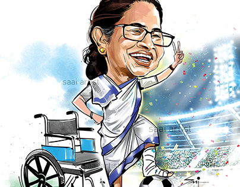
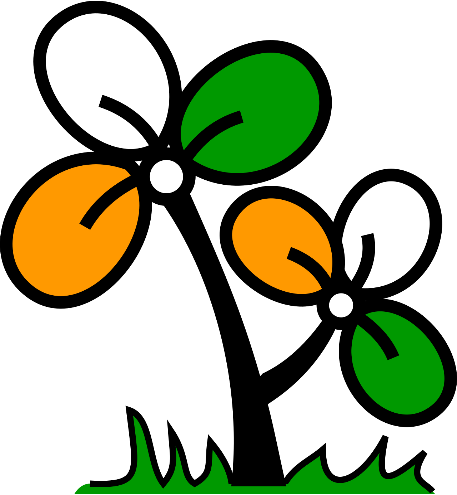
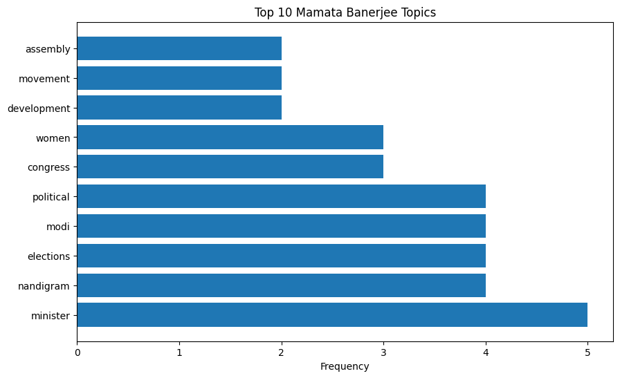
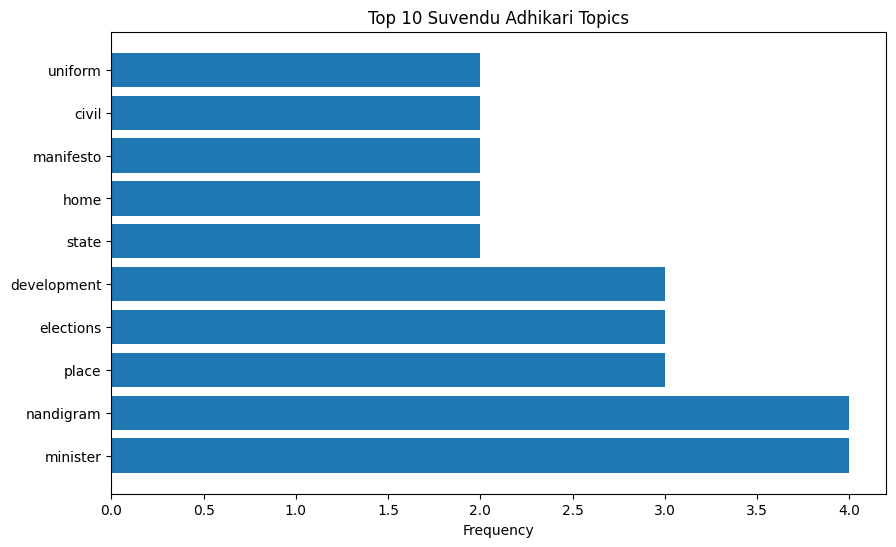
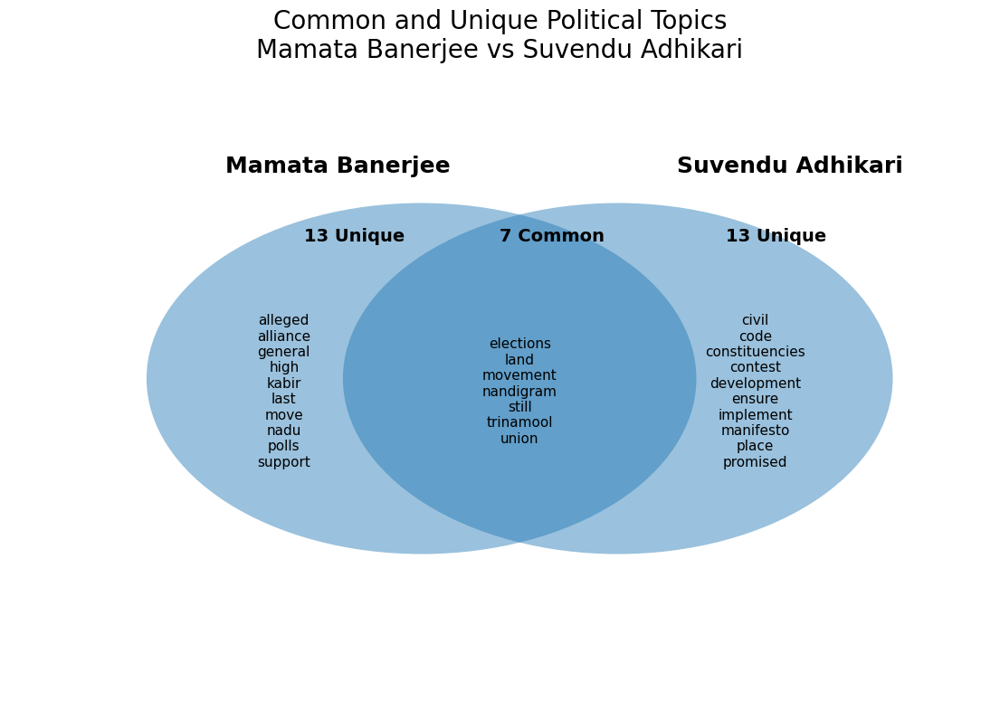
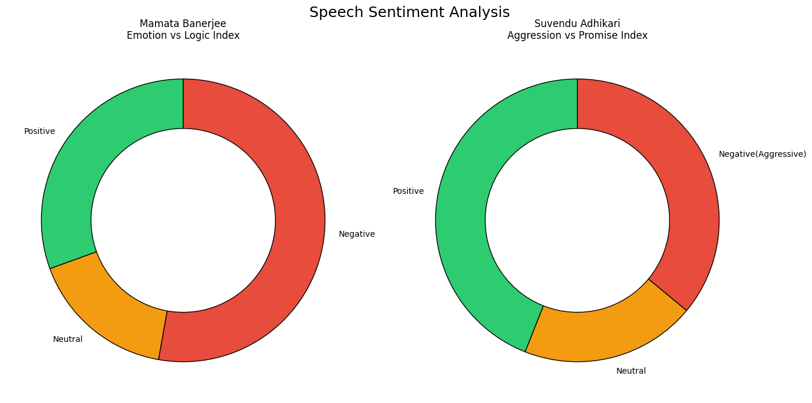
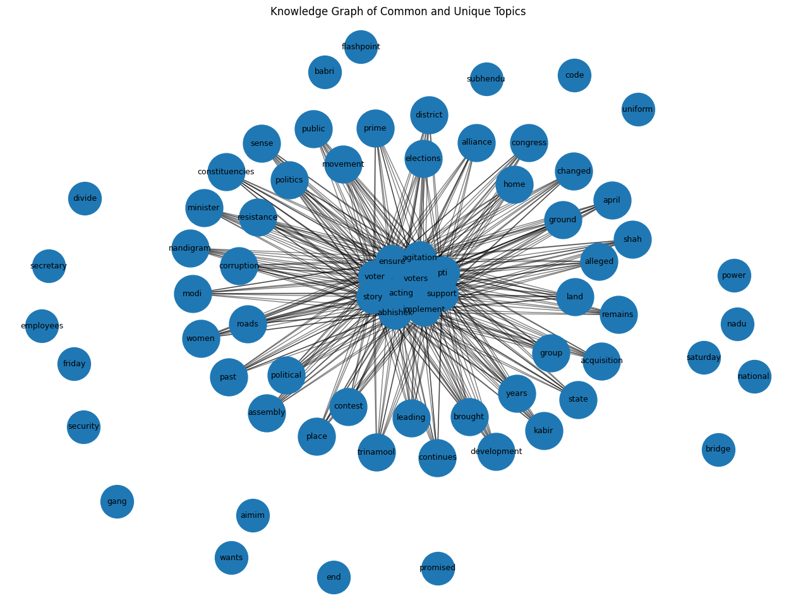

Mamata Banerjee
Bengal Election '26
Topic Modeling Comparison
Suvendu Adhikari
Mamata Articles
Suvendu Articles
Distinct Topics
Volatility
Dominant Topics extracted

Mamata's Key Topics
Keyword Clusters
Suvendu's Key Topics

Keyword Clusters
The Semantic Overlap

Campaign Firepower
Narrative Timeline 2026
Welfare vs Jobs
Topic polarization
Highest sentiment variance
Topics shift to rigging fears
Speech Sentiment

Mamata
Emotion vs Logic index appliedSuvendu
Aggression vs Promise index appliedTopic Knowledge Graph

Key Insights
Topic modeling shows that Mamata Banerjee focuses more on welfare, women, and Bengal identity, while Suvendu Adhikari focuses more on corruption, infiltration, and anti-TMC narratives. However, both leaders converge on common themes like violence, development, and elections, showing that these are the dominant issues shaping voter perception in West Bengal 2026.
Executive Summary
Political Positioning
TMC focuses on women voters, welfare schemes, Bengal identity, and Mamata Banerjee’s “Didi” image. BJP, led by Suvendu Adhikari and Amit Shah, emphasizes corruption, infiltration, law and order, border security, UCC, and anti-incumbency. The overall contrast is “welfare and protection” versus “change and enforcement.”
Media Narrative
English media focuses more on women voters, welfare politics, Nandigram, and Mamata Banerjee’s emotional appeal. BJP narratives are stronger around infiltration, Babri Masjid, border fencing, corruption, and UCC. Nandigram remains the biggest symbolic battleground linking Mamata’s 2021 defeat and Suvendu’s rise.
Sentiment Outlook
The sentiment is highly polarized. Mamata Banerjee’s rhetoric highlights emotion, loyalty, welfare, women’s dignity, and Bengal pride. Suvendu Adhikari uses stronger language around corruption, infiltration, violence, border security, and appeasement politics. Mamata builds emotional connection, while Suvendu creates urgency for change.